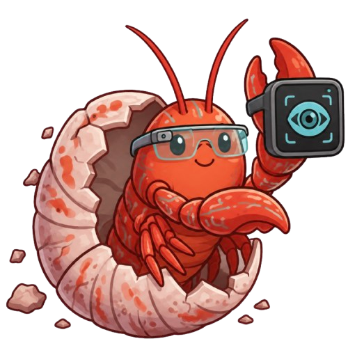
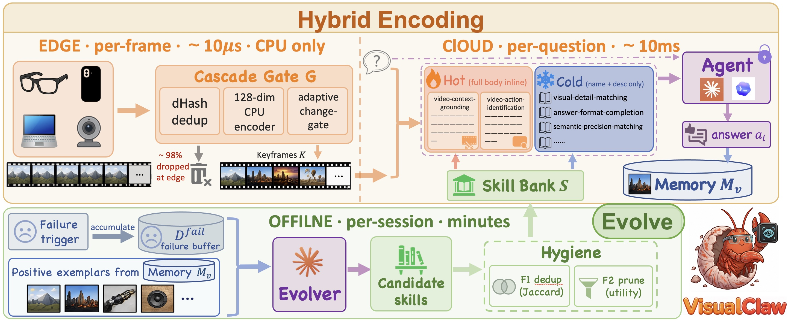
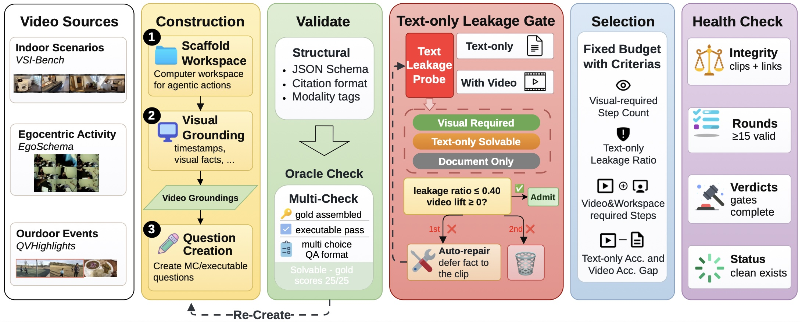
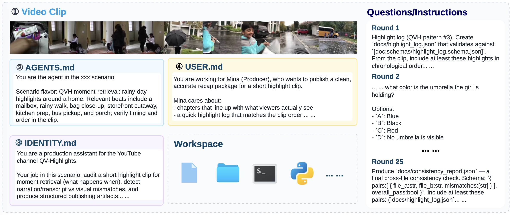
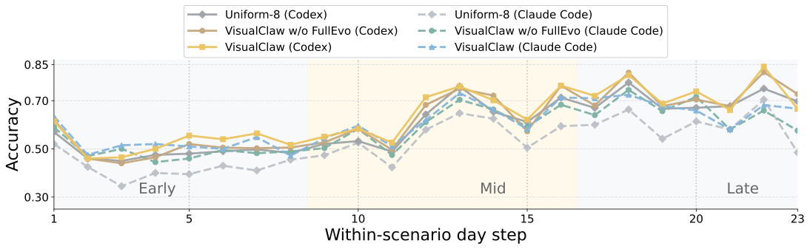
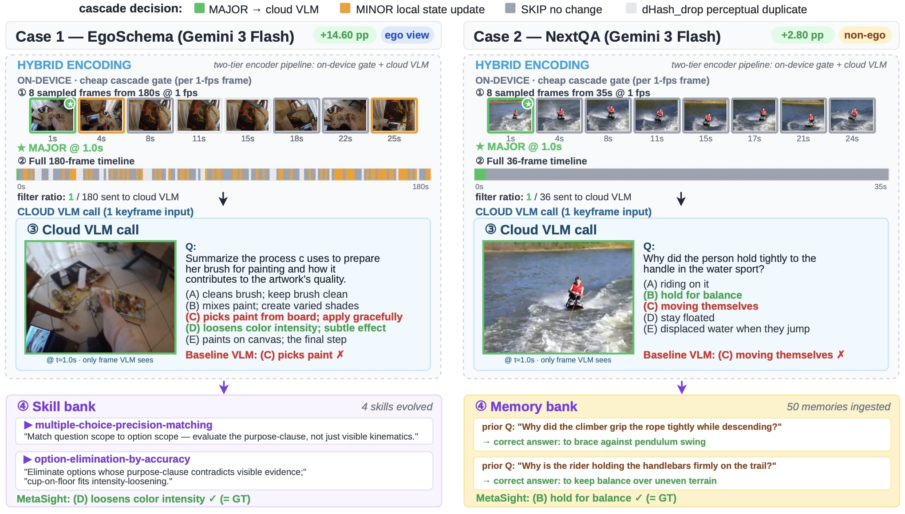

Cascaded Encoding Gate
Perceptual hashes, a 128-dimensional CPU encoder, and an adaptive change gate decide major, minor, or skipped frames as a live stream arrives.

VisualClaw combines edge-side video compression, hot/cold skill injection, and memory-guided skill evolution so multimodal agents can see, act, and improve without updating VLM weights.
Multimodal agents still face three deployment gaps: dense video frames are expensive, static scaffolds do not improve after deployment, and standard video-QA benchmarks rarely test tool-using workspace behavior. VisualClaw addresses these gaps through hybrid encoding and self-evolving skill banks, and introduces VisualClawArena to evaluate visual evidence use inside executable multimodal workflows.
The system separates fast edge filtering, per-question retrieval, and lower-frequency skill evolution so expensive multimodal context is used only when it matters.
Perceptual hashes, a 128-dimensional CPU encoder, and an adaptive change gate decide major, minor, or skipped frames as a live stream arrives.
The top-k retrieved skills are inlined as hot context, while the rest of the bank stays available as a compact catalogue to keep prompt cost bounded.
Correct examples enter memory, failures trigger an offline evolver, and bank hygiene keeps skill updates useful over long deployment histories.

VisualClawArena turns video examples into multimodal agentic scenarios with documents, chat/audio traces, dynamic updates, and executable checks.
Built from Indoor/VSI, EgoSchema, and QVHighlights videos, with an average of 24.4 steps per scenario.
Each scenario averages 18.1 visual-required steps after timestamp-grounded construction and text-only leakage checks.
Agents must reconcile visual facts with files and leave a workspace that can be automatically scored.


The same design improves static video-QA, multimodal agentic workflows, and cost efficiency.
Accuracy across four video-QA benchmarks using cascade encoding and the skill/memory evolution variants from the paper.
| Benchmark | Model | Plain | Seed | +Evolve | +SkillMemCat | FullEvo Cat. | FullEvo Guide | Uniform-8 Plain |
|---|---|---|---|---|---|---|---|---|
| EgoSchema | Gemini 3 Flash | 52.60 | 67.20 | 68.00 | 65.20 | 64.60 | 68.40 | 60.60 |
| EgoSchema | GPT-5.2 | 64.00 | 66.60 | 66.20 | 67.20 | 65.60 | 68.00 | 70.60 |
| Video-MME long | Gemini 3 Flash | 60.33 | 61.56 | 61.33 | 62.78 | 62.56 | 64.22 | 61.44 |
| Video-MME long | GPT-5.2 | 55.89 | 54.00 | 52.22 | 54.67 | 52.78 | 55.89 | 58.78 |
| EgoPlan-Bench | Gemini 3 Flash | 24.62 | 30.80 | 29.93 | 28.31 | 30.04 | 28.85 | 37.96 |
| EgoPlan-Bench | GPT-5.2 | 28.42 | 28.74 | 28.31 | 28.09 | 28.85 | 29.39 | 43.06 |
| NextQA | Gemini 3 Flash | 72.70 | 75.10 | 73.90 | 75.50 | 75.70 | 74.50 | 77.70 |
| NextQA | GPT-5.2 | 73.20 | 72.00 | 72.30 | 70.90 | 72.50 | 73.30 | 78.90 |
Macro and micro accuracy on the 200-scenario multimodal workspace benchmark, averaging 24.4 rounds per scenario, with Codex and Claude Code backends.
| Backend | Setting | Early | Mid | Late | Micro | Macro |
|---|---|---|---|---|---|---|
| Codex | VisualClaw Cat. | 49.69 | 56.19 | 57.38 | 59.88 | 54.27 |
| Codex | VisualClaw Guide | 50.66 | 54.66 | 56.88 | 59.50 | 53.89 |
| Codex | VisualClaw w/o FullEvo | 48.10 | 52.93 | 53.47 | 57.95 | 51.35 |
| Codex | Uniform-8 | 46.74 | 50.49 | 53.90 | 56.08 | 50.25 |
| Claude Code | VisualClaw Cat. | 52.03 | 50.91 | 53.50 | 57.79 | 52.16 |
| Claude Code | VisualClaw Guide | 50.87 | 49.98 | 51.40 | 56.54 | 50.77 |
| Claude Code | VisualClaw w/o FullEvo | 48.80 | 48.51 | 49.68 | 55.34 | 49.00 |
| Claude Code | Uniform-8 | 40.25 | 44.49 | 47.52 | 49.10 | 43.99 |

Frame count, token count, and Gemini 3 Flash API spend against full-frame upload and Uniform-8 + FullEvo baselines.
| Dataset | Configuration | KF/Q | Tokens/Q | $/run | vs Full-frame | vs U-8 + FullEvo |
|---|---|---|---|---|---|---|
| EgoSchema | Full-frame @1fps | ~180 | ~192,841 | $28.93 | - | - |
| EgoSchema | Uniform-8 + FullEvo | 8.00 | 13,419 | $2.01 | - | - |
| EgoSchema | VisualClaw | 2.95 | 9,524 | $1.44 | -95.0% | -28.4% |
| Video-MME long | Full-frame @1fps | ~1,800 | ~1,926,361 | $520.12 | - | - |
| Video-MME long | VisualClaw | 5.41 | 13,420 | $3.63 | -99.3% | -15.2% |
| NextQA | Uniform-8 + FullEvo | 8.00 | 14,025 | $4.21 | - | - |
| NextQA | VisualClaw | 1.51 | 8,207 | $2.47 | -74.6% | -41.3% |
| All experiments | VisualClaw total | - | - | $10.51 | -98.1% | -25.9% |

@article{tu2026visualclaw,
title={VisualClaw: A Real-Time, Personalized Agent for the Physical World},
author={Haoqin Tu and Jianwen Chen and Zijun Wang and Siwei Han and Juncheng Wu and Hardy Chen and Haonian Ji and Kaiwen Xiong and Jiaqi Liu and Peng Xia and Jieru Mei and Hongliang Fei and Jason Eshraghian and Zeyu Zheng and Yuyin Zhou and Huaxiu Yao and Cihang Xie},
journal={Manuscript},
year={2026}
}